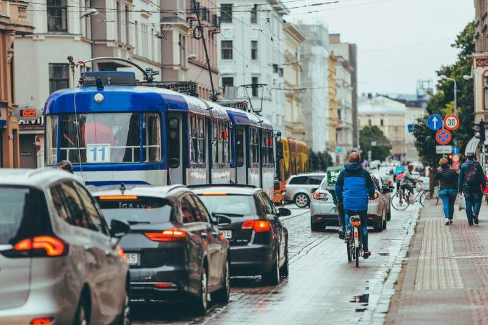

Les Français réalisent en moyenne 181 millions de déplacements au quotidien et en tête du classement nous retrouvons sans surprise la voiture qui apparaît comme notre moyen de transport préféré avec un taux d'utilisation qui se situe à 77%. Indispensable dans certaines régions, elle devient peu adaptée dans des zones urbaines réglementées et proposant d'autres types de mobilités.
Ce qui est vrai pour les Français, l’est tout autant pour les concessions automobiles. Aujourd’hui, de plus en plus de concessionnaires automobiles se tournent vers des solutions de mobilité douce et d’écomobilité. Ainsi, ces derniers proposent à leurs clients des trottinettes, des vélos ou encore des scooters électriques qui viennent compléter les solutions de mobilité historiquement proposées lorsqu’un automobiliste se rend au garage pour sa révision ou son entretien.
Pour marquer cette transition, évolution, certains concessionnaires créent une marque dédiée aux nouvelles mobilités comme Vulcain Ecomobility, Amplivolt et Dugardin Mobility, de nouveaux labels commercialisant vélos, trottinettes, scooters, tout électrique. De nouvelles marques qui viennent répondre à de nouveaux usages, mais sont également une nouvelle opportunité de chiffre d’affaires.
Ces nouveaux besoins utilisateur s'expliquent notamment par le fait que les trajets en ville et de courte distance sont les plus polluants et les plus consommateur en CO2. Une récente enquête de l'Ifop menée sur le second semestre 2021 révèle que 10% des Français ont changé leur moyen de transport pour se rendre à leur lieu de travail. Un changement en grande partie dû à la crise sanitaire mettant en avant ces différents modes de déplacement.
Les grandes métropoles telles que Paris, Marseille, Nice, Bordeaux, Lille, Nantes, Rennes, Lyon où Brikks est majoritairement présent, permettent d’utiliser des services de mobilité douce en guise de remplacement d’un véhicule de prêt au moins le temps d’une journée et dans des villes facilitant l’intermodalité.
C’est effectivement le pari que s’est lancé Brikks en voulant accompagner cette transition pour les professionnels de l’automobile. Pour cela, nous avons créé une plateforme destinée aux concessionnaires leur permettant de gérer sur un seul et même outil, l’ensemble de ces nouvelles solutions de mobilité.